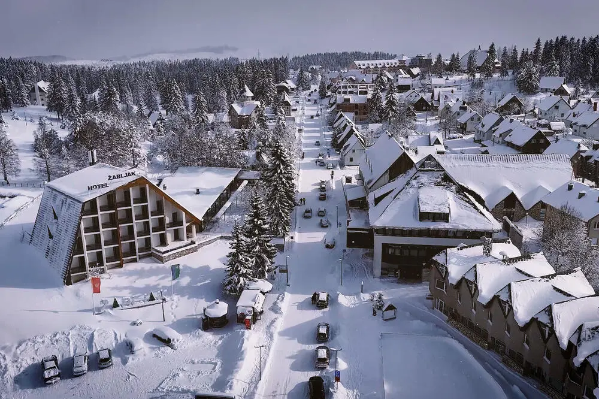

ЗИМСКА ПОНУДА

ЗИМСКА ПРИКАЗНА НА ЖАБЉАК
Жабљак, Црна Гора
26.11 - 30.11
Доживејте ја зимската магија на Жабљак, опкружен со снежните врвови на Дурмитор. Уживајте во прекрасната планинска природа, свежиот воздух и мирната зимска атмосфера. Идеална понуда за краток зимски одмор, прошетки низ снегот и незаборавна планинска авантура.
ЗИМСКА АВАНТУРА
Еден од најпознатите планински градови во Црна Гора, сместен во срцето на Дурмитор и опкружен со прекрасни снежни пејзажи. Жабљак е идеална зимска дестинација за одмор и уживање во чистата планинска природа, зимските активности и автентичната планинска атмосфера. Во рамките на престојот ќе имаме можност да го доживееме и Националниот парк Дурмитор, познат по своите величествени планински предели, длабоки долини, шуми и недопрена природа.
Едно од најпознатите природни богатства на Дурмитор, сместено во прекрасна планинска околина и опкружено со густи зимзелени шуми и високи планински врвови. Прошетката до езерото овозможува уживање во мирната природа, свежиот планински воздух и спектакуларните снежни глетки. Ова магично место создава совршена атмосфера за релаксација, фотографирање и уживање во неповторливиот зимски амбиент на Дурмитор.
Состанок со групата на автобуска станица во Скопје, 30 минути пред поаѓање. Поаѓање со организиран автобуски превоз кон Подгорица. Потоа следи организиран автобуски превоз до хотелот во Жабљак. По пристигнувањето следуваат сместување во хотел и време за одмор. Во попладневните часови е предвидена кратка прошетка низ центарот на Жабљак, запознавање со околината и уживање во зимската атмосфера. Вечерта е слободна за вечера и индивидуални активности. Ноќевање во хотел.
Појадок во хотелот и организирана прошетка низ Жабљак. Следува запознавање со централниот дел на планинскиот град, со слободно време за кафе, фотографирање и уживање во снежната околина. Во попладневните часови е предвидено слободно време за зимски активности, прошетка или одмор во хотелот. Вечерта е слободна за вечера и индивидуални активности. Ноќевање во хотел.
Појадок и организирано заминување кон Националниот парк Дурмитор. Следува уживање во снежните планински предели и панорамските погледи кон околните врвови и долини. Во зависност од временските услови и состојбата на патиштата, предвидени се кратки безбедни прошетки и запирања на погодни места за фотографирање и уживање во природата. Потоа следува враќање во Жабљак и слободно време за одмор. Ноќевање во хотел.
Појадок во хотелот и организирано заминување кон Црно Езеро, едно од најпознатите природни места во областа на Дурмитор. Следува прошетка до езерото, во зависност од временските услови и проодноста на пристапните патеки, со време за фотографирање и уживање во зимскиот пејзаж. По посетата следува враќање во Жабљак и слободно време за ручек и одмор. Попладнето е слободно за индивидуални активности и уживање во планинската атмосфера. Ноќевање во хотел.
Појадок во хотелот и одјавување согласно предвиденото време. Следува кратка утринска прошетка низ Жабљак и слободно време за последно кафе, фотографии или купување сувенири. Потоа следува собирање на групата и организирано поаѓање кон автобуската станица. По пристигнувањето на автобуската станица следува завршување на потребните процедури и поаѓање кон Скопје. По пристигнувањето и преземањето на багажот завршува организираното патување.